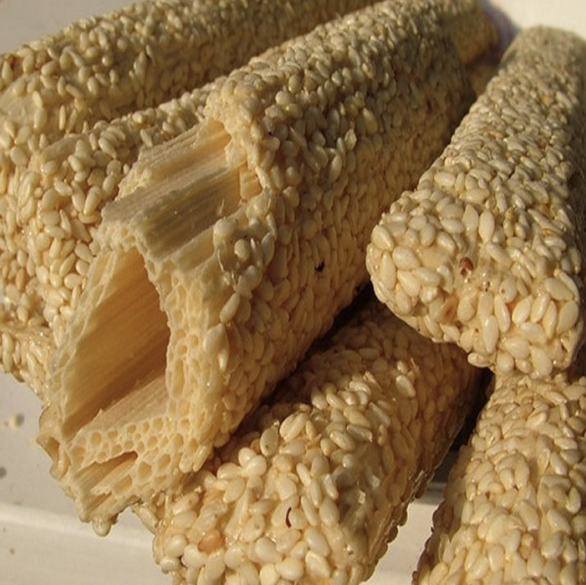

菏泽芝麻糖棍
发布时间: 2022-04-13 59 次浏览
-
基本介绍
芝麻糖，是菏泽地区传统食品，有条形，平板形，色泽乳白，体亮晶明，香甜酥脆，味道纯正可口，营养丰富，并有和胃顺气、止咳和医治便秘等作用。已有200余年的历史。也属于山东美食——芝麻糖：山东菏泽市鄄城糖牛楼制作芝麻糖已有二三百年的历史。香脆可口，绿色营养，集五谷（小麦、小米、大米、黍子、麻）之精华，进多重发酵手工制作的传统休闲食品，至今还是老少皆宜的健康食品。
营养价值
芝麻糖是一种健身益寿的油料食品。它不仅营养丰富，还能治疗消化不良、伤风咳嗽等疾病。特点是色泽米黄，香甜可口，酥中有脆。青少年白发者，也可用吃零食来辅助治疗，如芝麻糖。 芝麻分黑、白两种，食用以白芝麻为好，药用以黑芝麻为量。黑芝麻对于缺铁性贫血、慢性神经炎、末梢神经炎、动脉粥样硬化等均有治疗作用。据报道，芝麻油有促凝血作用，可用于治疗血小板减少性紫癜和出血性疾病，儿童每次服4毫升，饭前服，1日3次，15天为1疗程，有一定效果。 儿童食用芝麻有许多烹调方法。例如，将芝麻炒熟后，用擀面杖压碎或用绞肉机绞成粉末状芝麻面，拌入糖及猪油，可做成汤圆、包子馅食用，或调入米粥、稀粥中给婴儿食用。或者，应用市场上供应的黑芝麻糊。 芝麻油是营养调味品，有浓郁的芳香，是汤、凉拌菜、凉面、糕点、花卷的良好调料。芝麻酱也有可口的香味，可作为早点、凉拌菜、凉面等的调味品。
历史风俗
据民间传说，灶王爷本是天上的一颗星宿，因为犯了过错，被玉皇大帝贬谪到了人间，当上了“东厨司命”。它端坐在各家各户的厨灶中间，看着人们怎样生活，如何行事，把好事坏事都详细记录下来，到了腊月二十 三日就回转天庭，向玉皇大帝禀报各家各户的善恶情况。到了腊月三十晚上再返回人间，根据玉帝的旨意惩恶扬善。
所以人们在腊月二十三日都要祭灶，并把又粘又甜的糖瓜献给灶王，粘住灶王爷的嘴，让它“上天言好事，下地保平安”。儿童们则把这一天当作春节的序幕和“彩排”。天一擦黑儿，就放起了鞭炮，在鞭炮声中由家中的男主人把糖瓜一盘，清茶一碗供在灶王像前，点上蜡烛和线香，祈祷行礼后，把灶王像从墙上揭下来烧掉，再把茶水泼在纸灰上，糖瓜则由孩子们抢着分而食之。
制作方法
1．先将玉米用220型粉碎机磨成米粒状，每100公斤玉米糁子拌水45公斤，（夏季40公斤）搅拌均匀后堆放5小时，然后倒入锅内蒸。待汽水上来后，进行放气。每放两次气加一次水，共放6次，第一次加水20公斤，第二次加水10公斤，第三次加水5公斤。加水的目的是为了将原料蒸透焖熟。蒸好的玉米糁子要像冻肉一样。
2．在蒸熟的原料中搅拌35％的大麦芽，（大麦用温水浸泡1小时，放在室内发芽，发芽后用打浆机打或用石碾碾成糊状），放到锅内蒸半小时左右，然后取出置缸内发酵。
3．发酵后用50公斤蒸锅水洒在原料上，3小时又把糖水倒入另一容器，原料倒进锅内继续熬，随即加水2次，先加开水200公斤，2小时又把糖水倒进容器，再加水100公斤，残渣用纱布包过滤出来，锅内的糖水同前2次倒出的糖水一起加火熬制。2小时后用水瓢反复扬，待糖汁成片状时，再用糖棍搅1小时。然后改用微火继续熬，直至用木棍挑起一点见风即脆为止。
4．将熬成的糖汁舀到小锅内盖好。（以防糖凉发硬拉不开），随即上板盘条，盘条时一次盘1公斤左右，一人先在勾板上将糖条盘虚，再交另一人迅速扯成条，挂竿拉成直径1．5厘米的圆柱条状，最后用火刀节成15厘米长的小段（火刀烧热而不发红），再放到筛子里用蒸汽腾一下，沾上脱皮芝麻即可。一般每100公斤玉米出糖48～50公斤。
芝麻脱皮的方法 用凉水将芝麻浸泡12小时，捞出倒入锅内炒成半干，用簸箕将皮簸出，然后再炒第二次，把芝麻炒胀即可沾糖。
黄河文化旅游宣传平台
联系电话: 17753010787
版权所有：山东大学技术团队
技术支持：山东大学技术团队